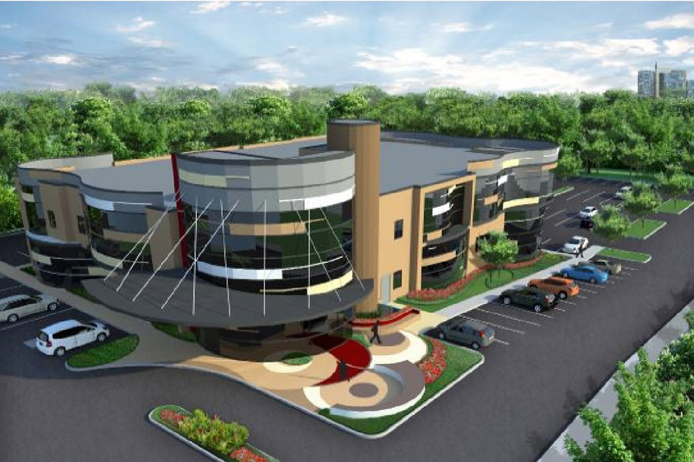
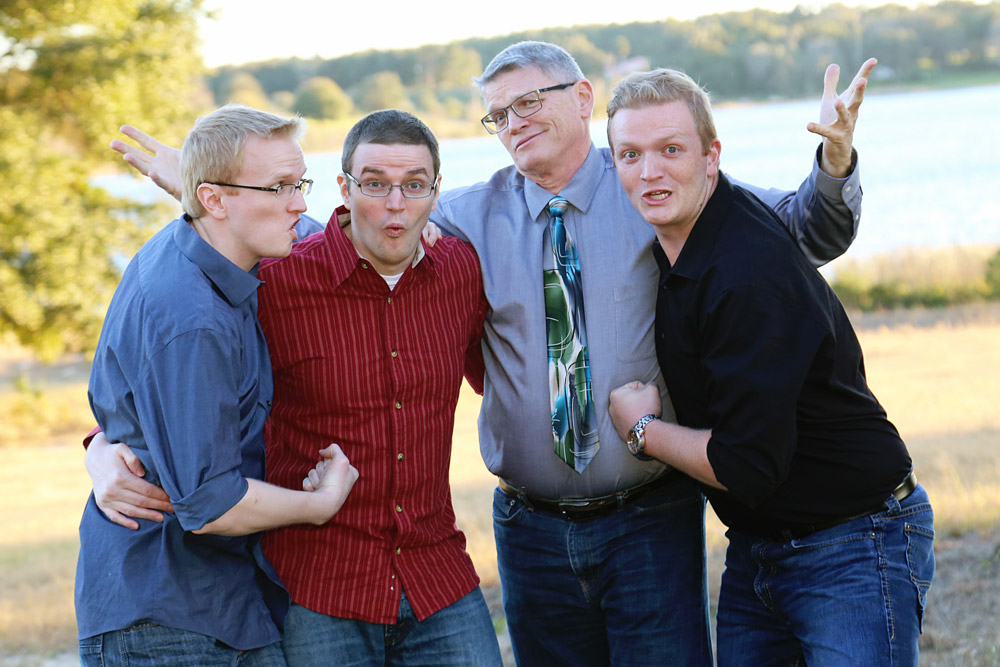
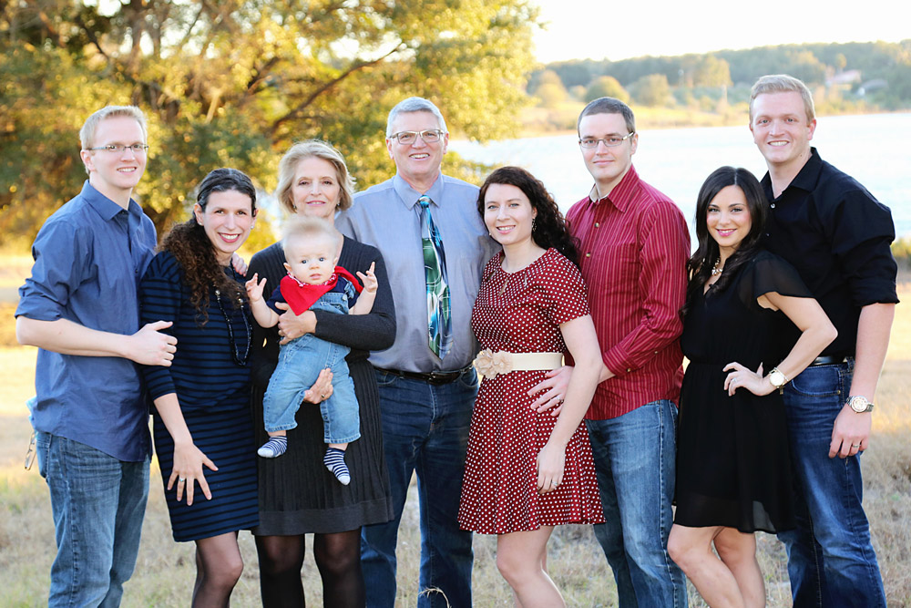
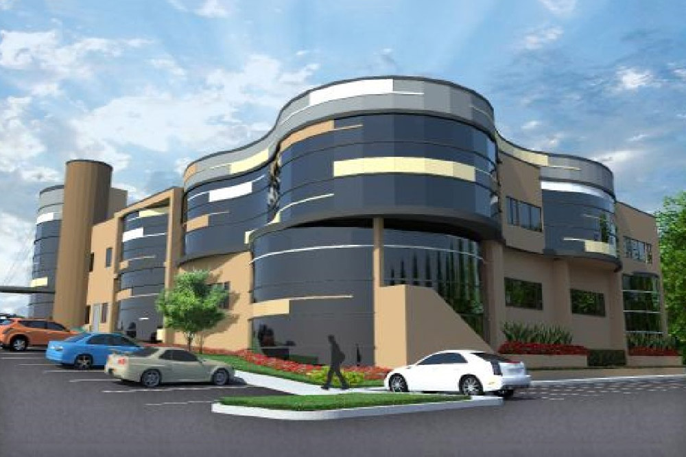
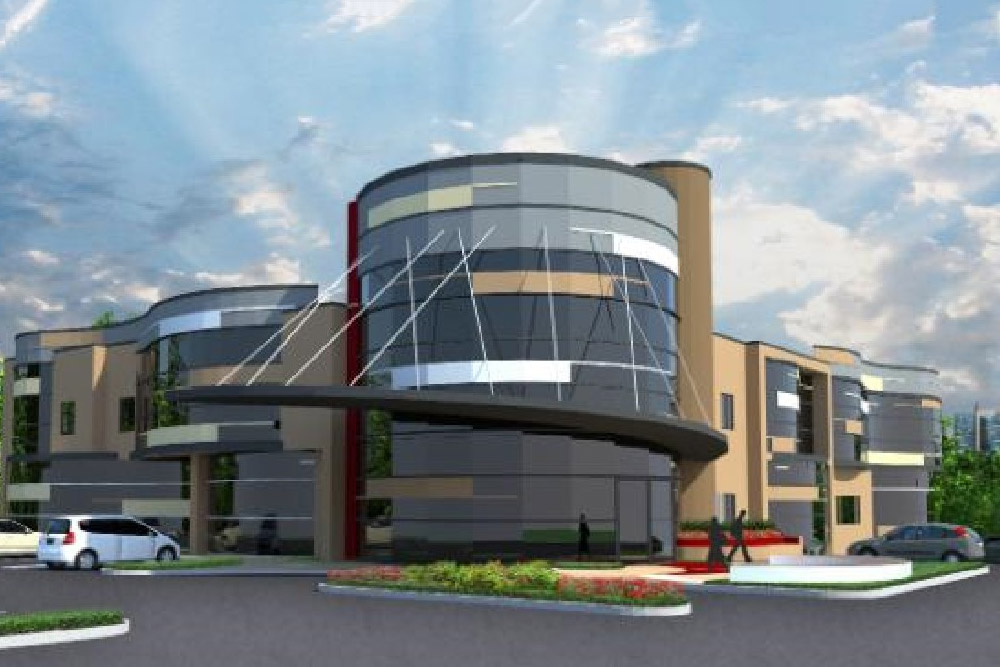
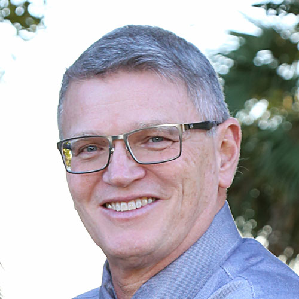

Winnie Palmer Hospital - Women's Care

Van Smith n' Sons!

Van Smith n' Fam!

Donovan's grandson Sawyer's birthplace

Winnie Palmer - Van's philosophies in action

Van Smith!
The Man
Donovan K. Smith, Jr. was born in 1952 and raised in Lancaster, Pennsylvania for the entirety of his childhood. His father was an artist as well as an architect, and his mother was a model, a mother, and a model mother.
Donovan (or better known to his friends as Van) is a talented artist in his own right. He is also a baseball fan, a craft beer enthusiast, pun machine, the place to be, and the proud owner of way too many ties. He also enjoys doing impressions of Donald Duck, Mickey Mouse, Goofy, and Yogi Bear to the horror and/or delight of passersby.
Van has been happily married to his wife, Teresa, for over 41 years. Together they reared three boys into three man-shaped boys. In his own words, "I hate (love) my sons, and the woman who made them possible."
The Career
The Career goals of Donovan (henceforth Van) were originally in the field of engineering. But one year into college, he "realized [his] talents, abilities, and interests were most attuned to architecture."
Van was inspired by his father, Donovan K. Smith, Sr. (or better known to his friends as Don) who "started his own design business in the midst of the Great Depression". Don managed to keep his business afloat for his entire professional career.
Van was fascinated by healthcare architecture, which is the more specialized field in which he now works. According to him, healthcare architectural projects are "the most complex and challenging building type" and they are also "integral to living and health, in that we all ultimately strive to be well and the environments for staying well and treating illness are the greatest opportunity for creativity."
In fact, the Winnie Palmer Women's Health facility project that Donovan worked on would become his first grandson's birthplace!
The Philosophy
The Philosophy that Donovan (that's Van to you) brings to healthcare architecture is refined to the finest detail. As a layman of the architectural world, I find I can only comprehend so much before my brain attempts to detonate. But what I can understand, is that his ideas are comprehensive and cutting edge.
In fact, Van (that's Dad to me) has such deep knowledge and empathy for healthcare and the environmental needs thereof, he is a regular speaker at conferences and has published white papers on the subject.
I asked Van to describe his philosophies regarding the relationships between architecture, healthcare, and the community. In an uncharacteristically succinct fashion he said:
It is all integrated as is life. And as in life we strive to maintain or return to balance, and seek to live our lives in places and environments that bring us comfort and reassurance. I am a believer in the premise that through life’s activities we can be mentally and physically challenged, and emotionally and personally rewarded. These philosophies are the foundation to creating environments that meet today’s needs and are able to sustain future opportunities.